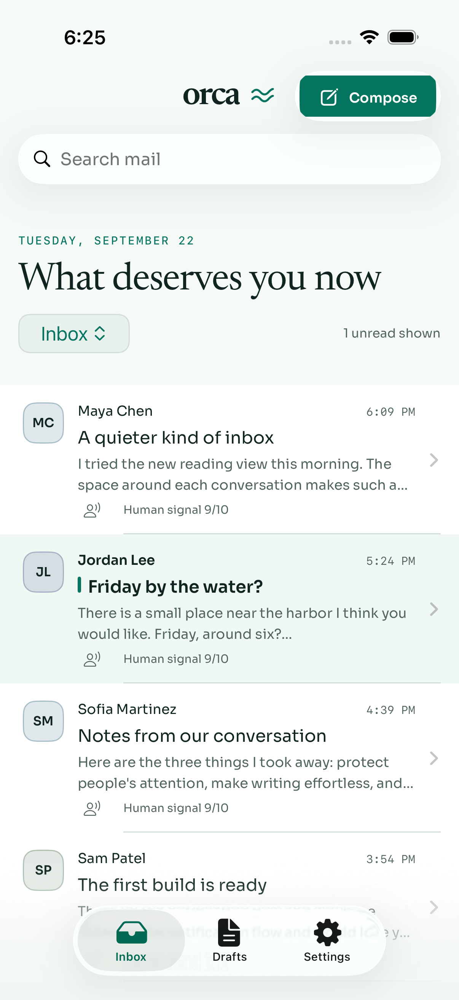
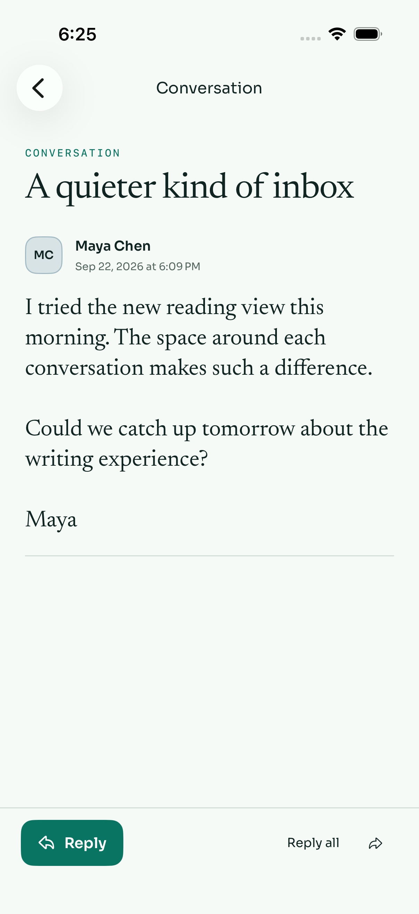
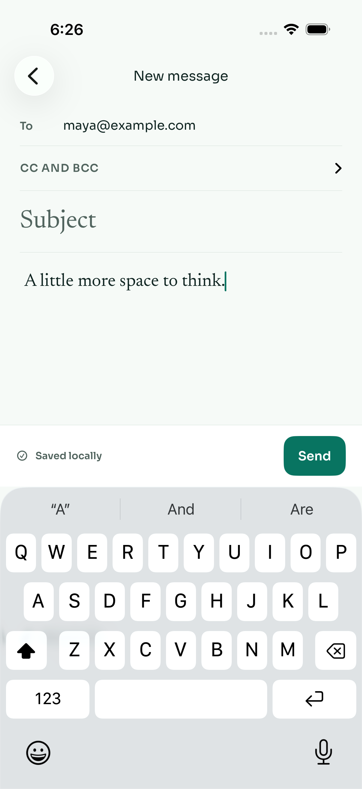
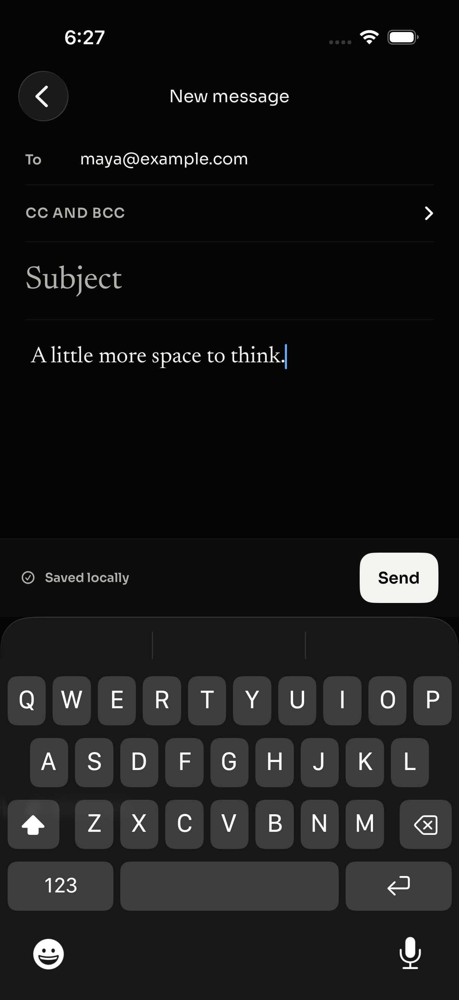
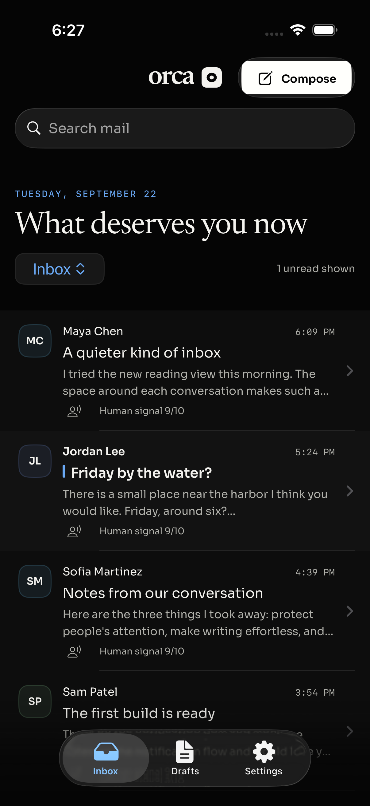
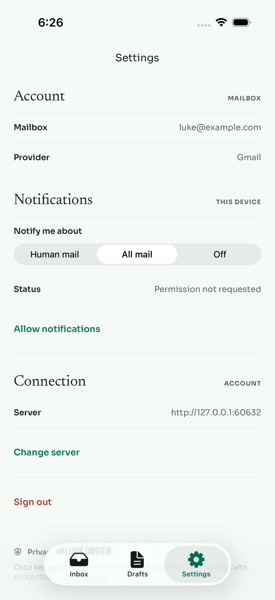
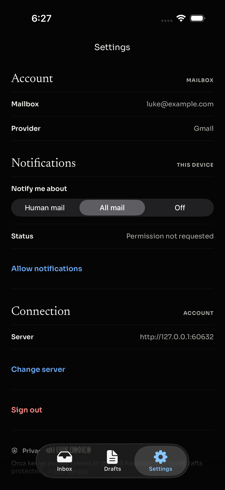
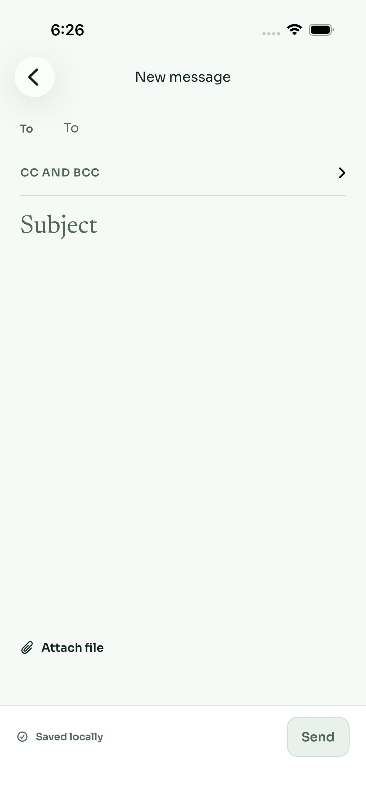
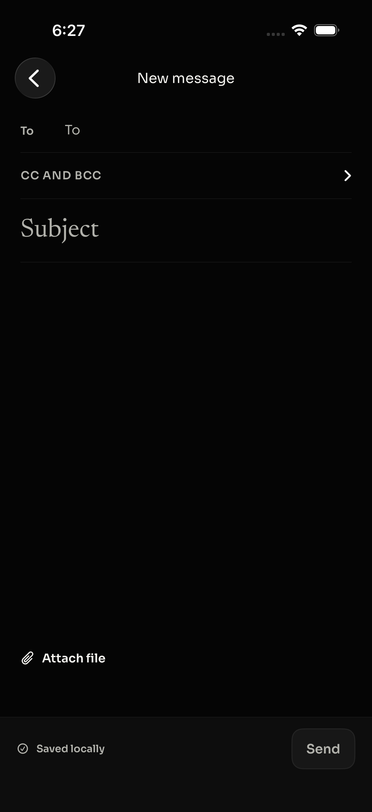

Orca · Native iPhone refinement
Same calm.
Smaller canvas.
The iPhone now shares the main application’s visual language: Newsreader for the human voice, Sora for controls, foam and lagoon in light mode, and warm white on true black in Orca Black.
A shared identityBundled fonts, the original black brand mark, the wave glyph, and the same semantic colors as the desktop app. Fonts work offline.
Mail comes firstSoft contact signatures, restrained unread markers, clear sender metadata, generous reading rhythm, and a focused reply surface.
A place to writeA flat writing sheet replaces grouped form cards. Send stays above the keyboard; the action bar reflows for accessibility text sizes.
Before → after
 Before: default native styling.
Before: default native styling.
After: Orca typography, palette, signatures and hierarchy.Reading & writing

A serif reading surface with a clear reply action.
Recipient, subject, words, and a visible Send action.
Warm-white primary action in Orca Black.Both appearances

True black, graphite, and restrained blue indicators.
Ruled sections with clear scope and selected labels.
The same hierarchy and readable controls in dark mode.Disabled controls in both appearances

Empty compose · light
Empty compose · Orca BlackVerification
Final simulator build passed. All 17 unit tests passed, along with four UI test executions across light and dark appearance: reading, search, reply autosave, draft reopening, sending, long HTML scrolling, and control states. Each successful send-flow run produced one unique simulated delivery. Independent source review found no remaining blockers.
Fixture mail only. This visual pass does not establish real APNs delivery or physical-device signing. The iPhone acceptance checklist remains the device setup reference.